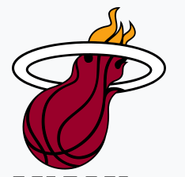
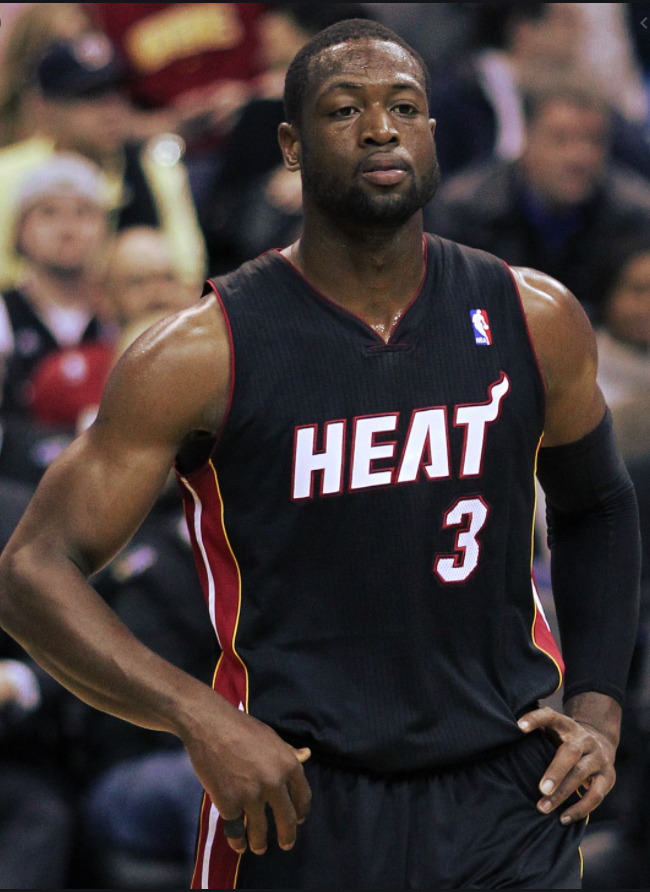
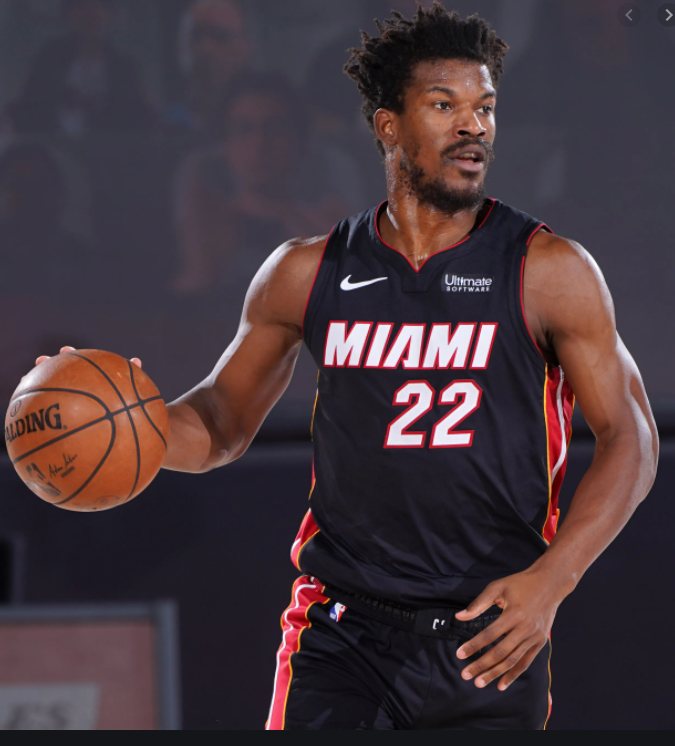

Heat
The Miami Heat are an American professional basketball team based in Miami. The Heat compete in the National Basketball Association (NBA) as a member of the league's Eastern Conference Southeast Division. The club plays its home games at American Airlines Arena, and has won three NBA championships. The franchise began play in the 1988–89 NBA season as an expansion team. After a period of mediocrity, the Heat gained relevance during the 1990s following the appointment of former head coach Pat Riley as team president. Riley constructed the high-profile trades of Alonzo Mourning and Tim Hardaway, which immediately propelled the team into playoff contention. Mourning and Hardaway led the Heat to four division titles, prior to their departures in 2001 and 2002. The team experienced renewed success after drafting Dwyane Wade in 2003. Led by Wade and following a trade for former NBA Most Valuable Player (MVP) Shaquille O'Neal, Miami won their first NBA Finals in 2006, under Riley as head coach. After the departure of O'Neal two years later, the team entered into another period of decline for the remainder of the 2000s. Riley retained his position as team president, but was replaced as head coach by Erik Spoelstra. In 2010, the Heat signed former league MVP LeBron James and perennial NBA All-Star Chris Bosh, creating the "Big Three" along with Wade. During their four-year spell together, Spoelstra, James, Wade, and Bosh led the Heat to the NBA Finals in every season, and won back-to-back championships in 2012 and 2013. The trio would all depart by 2016, and the team entered another period of rebuilding. Wade was eventually reacquired in 2018, albeit to retire with the franchise. After acquiring All-Star Jimmy Butler in 2019, the Heat returned to the NBA Finals in 2020. The Heat hold the record for the NBA's third-longest winning streak, 27 straight games, set during the 2012–13 season. Four Hall of Famers have played for Miami, while James has won the NBA MVP Award while playing for the team.
Dwyane Tyrone Wade Jr. (/dweɪn/ dwayn; born January 17, 1982) is an American former professional basketball player. Wade spent the majority of his 16-year career playing for the Miami Heat in the National Basketball Association (NBA). Wade won three NBA championships, was a 13-time NBA All-Star, an 8-time member of the All-NBA Team, and a 3-time member of the All-Defensive Team. Wade is also Miami's all-time leader in points, games, assists, steals, shots made, and shots taken.
After a successful college basketball career with the Marquette Golden Eagles, Wade was drafted fifth overall in the 2003 NBA draft by the Heat. In his third season, Wade led the Heat to their first NBA Championship in franchise history and was named the 2006 NBA Finals MVP. At the 2008 Summer Olympics, Wade led the United States men's basketball team, commonly known as the "Redeem Team", in scoring and helped them capture the gold medal. In the 2008–09 season, Wade led the league in scoring and earned his first NBA scoring title. Wade was selected as the NBA All-Star Game MVP in 2010. With LeBron James and Chris Bosh, Wade helped guide Miami to four consecutive NBA Finals from 2011 to 2014, winning back-to-back championships in 2012 and 2013. After playing for the Chicago Bulls and the Cleveland Cavaliers, Wade finished his playing career with Miami in 2019.
Jimmy Butler III (born September 14, 1989) is an American professional basketball player for the Miami Heat of the National Basketball Association (NBA). After playing one year of college basketball for Tyler Junior College, he transferred to Marquette University. He was drafted with the 30th overall pick in the 2011 NBA draft by the Chicago Bulls. Nicknamed "Jimmy Buckets", Butler is a five-time NBA All-Star, a three-time All-NBA Team honoree and a four-time NBA All-Defensive Team honoree. In 2015, he was named the NBA Most Improved Player.On July 6, 2019, Butler signed with the Miami Heat via a sign and trade with the 76ers in a four-team trade. On December 9, 2019, Butler was named Eastern Conference Player of the Week after he averaged 27.5 points, 9.0 rebounds and 8.5 assists per game. On December 10, Butler recorded a career-high 18 rebounds, along with 20 points and 11 assists in a 135–121 overtime win against the Atlanta Hawks. On January 30, Butler was named to his fifth NBA All-Star Game. The Heat reached the NBA Finals after defeating the Boston Celtics in the Eastern Conference Finals in 6 games, earning Butler his first Finals appearance. In Game 3 of the 2020 NBA Finals, Butler finished with 40 points, 11 rebounds, and 13 assists and became the third player in Finals history to record a 40+ point triple-double, joining LeBron James (then with Cleveland) in 2015 and Jerry West with the Lakers in 1969. Butler also became the first player to have more points, rebounds and assists in a Finals game than James, who finished with 25 points, 10 rebounds and eight assists. In Game 5, Butler had 35 points, 12 rebounds, 11 assists, and 5 steals to become the first player to register 35+ points, 10+ rebounds, 10+ assists and 5+ steals in a Finals game. He is also the second player to reach such stats in NBA playoff history after Gary Payton in 2000. Butler became the second player with multiple 30-point triple-doubles in the same Finals series, joining James in 2015. He became the sixth player with multiple triple-doubles in the a Finals series along with James, Magic Johnson, Larry Bird, Wilt Chamberlain and Draymond Green. The Heat came up short against to the Los Angeles Lakers in six games. Eventually, Butler became only the second player in a Finals series to lead his team in points, rebounds, assists, steals and blocks, joining James in 2016.